Techniques & Templates
One reference, one technique, one rebuild. Each plate measures the source, rebuilds it in code on an original subject, and files the numbers as a spec.
17 entries
Shared vocabulary 49techniquescaption-label3film-grain3paper-tooth3blob-field2card-ground2edge-metadata2gradient-map2misregister2rounded-frame2rule-ledger2atomsgrain10blur6mottle6clip5lettering5grid4lut4noise4offset4type4falloff3flat-fill3grating3mask3mono3radial3threshold3additive2band2breath2caption2condensed2dot2envelope2fbm2field2gaussian2gradient2label2margin2radial-gradient2rotate2rounded-rect2screen2sine2spectrum2stack2stock2stroke2
Techniques14 entries
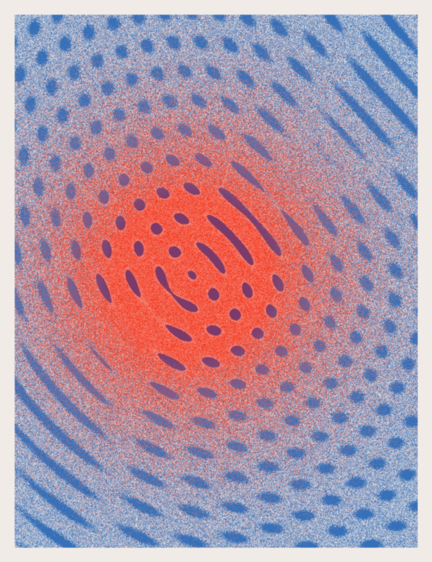
TS-01 3 variants
Moiré from two ring screensTwo concentric-ring gratings multiplied, dithered with grain, one hot core.
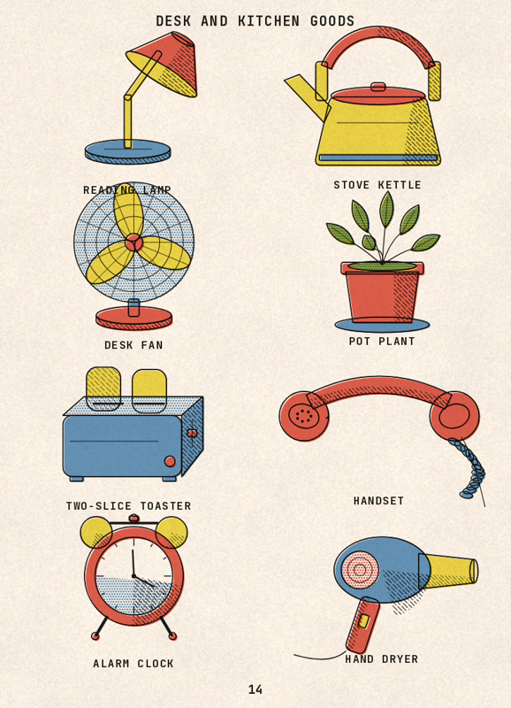
TS-02 3 variants
Four-ink spot illustrationFlat spot fills, a black keyline, hatched shading, slipped register, cream stock.
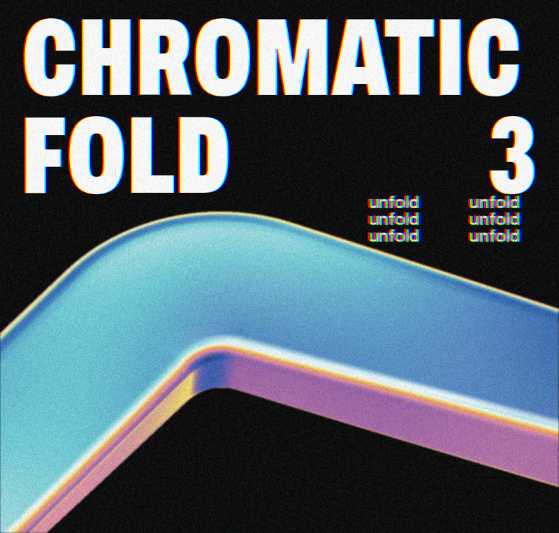
TS-03 3 variants
Iridescent chrome on blackA bent slab shaded by a spectral gradient across its normals, film grain, split-channel wordmarks.
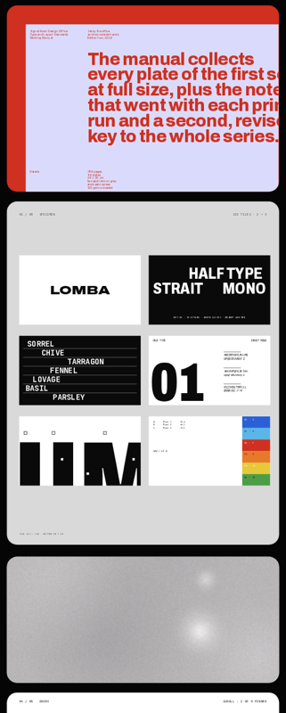
TS-04 3 variants · live
Stacked card scrollRounded cards that pin and stack as the page scrolls; each card a different ground.
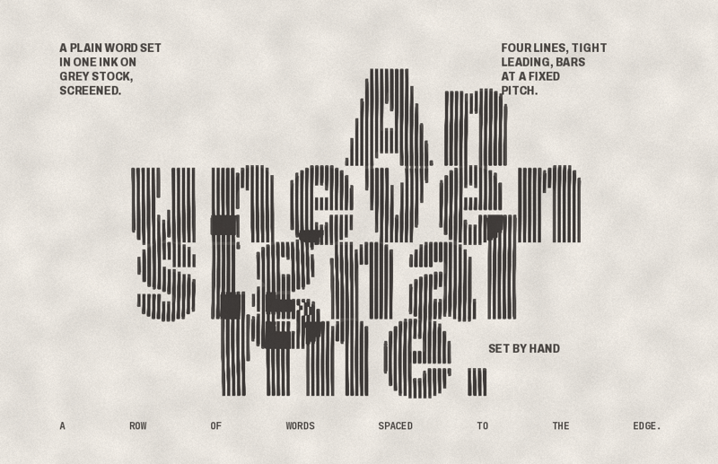
TS-05 3 variants
Vertical line-screen typeHeavy serif type printed through a vertical line screen; line width follows a phase field.
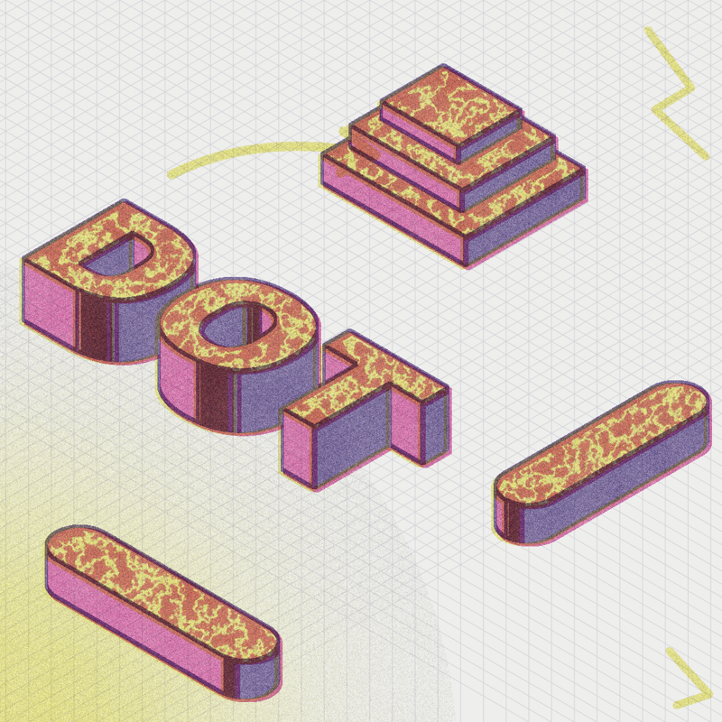
TS-06 5 variants · motion
Riso three-plate separationYellow, blue and fluorescent pink plates on an isometric drawing; each plate mis-registers and grains on its own.
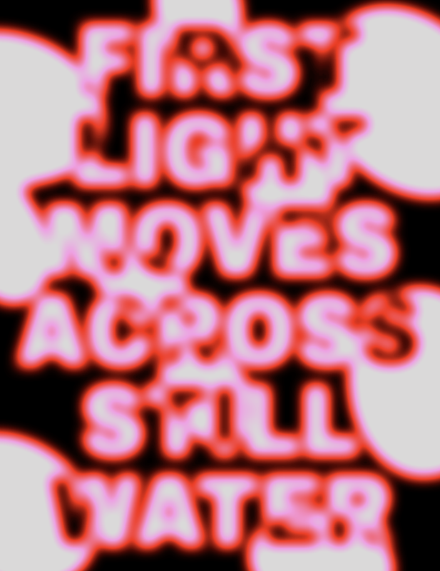
TS-07 3 variants · motion
Gradient-mapped blur typeHeavy type and a blob field blurred together, then mapped through a four-stop ramp; the blur breathes.
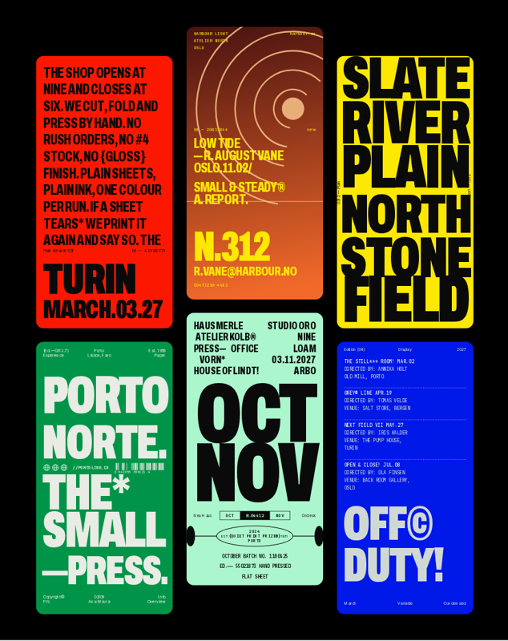
TS-08 3 variants · live
Flat-color card setSix rounded cards, one flat color each, condensed display type at two scales, mono metadata at the edges.
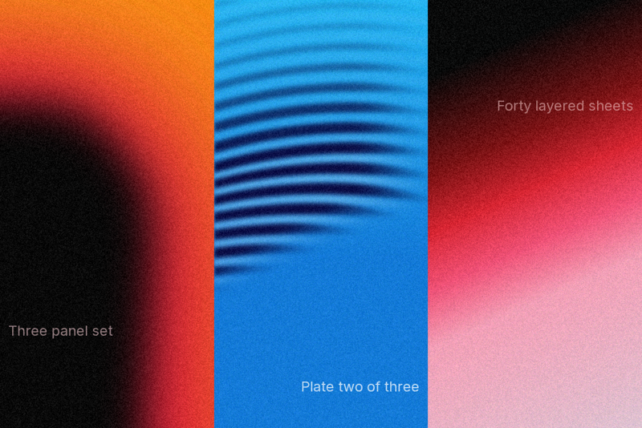
TS-09 3 variants
Grain gradient layersSoft-edged shapes over two-stop gradients, a rippled band, and one film grain over everything.
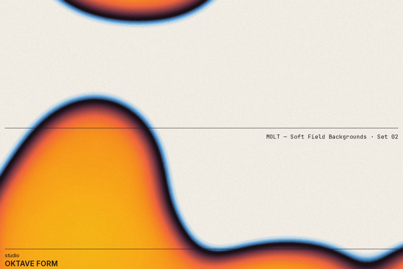
TS-10 4 variants · motion
Thermal blob fieldA blurred blob field mapped through a ramp with a dark rim stop, on paper with tooth.
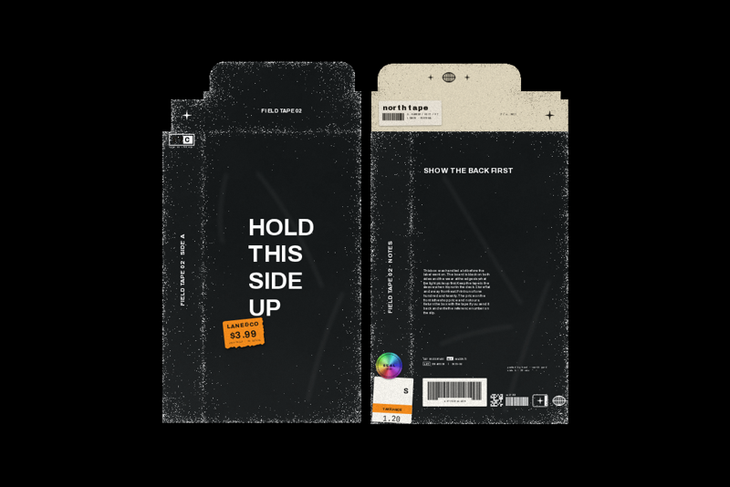
TS-11 3 variants
Worn black boxA black board box, front and back, with edge scuff, creases, a cream flap, stickers and a barcode block.
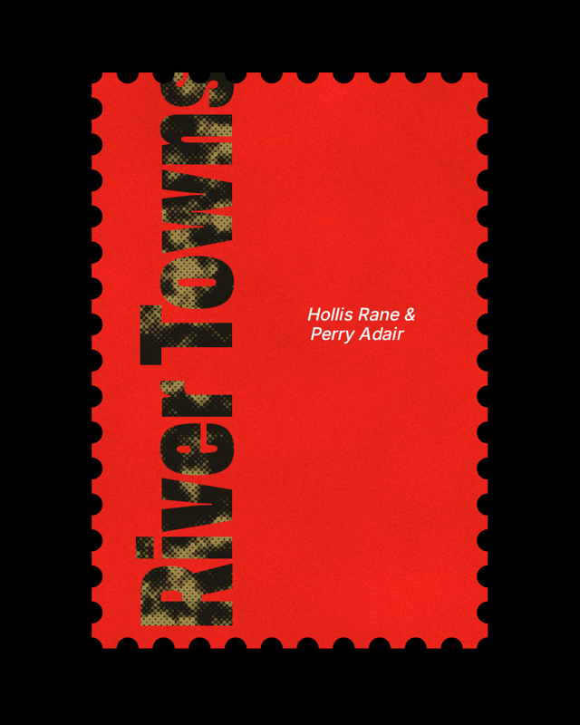
TS-12 3 variants
Perforated stampA red stamp with a scalloped perforation, a halftoned serif title running up the edge, and a script credit.
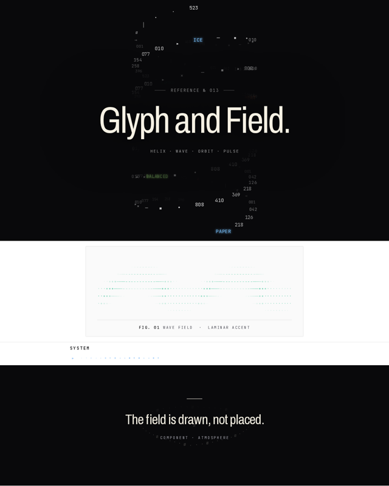
TS-13 3 variants · motion · live
ASCII glyph-field animationsMonospace glyphs as particles — a projected helix with palette labels, a sine wave grid, a breathing orbit and a pulse row, all fillText.
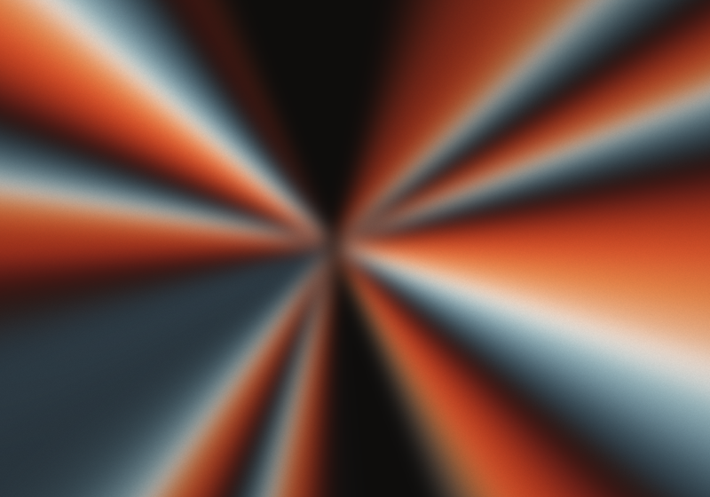
TS-14 2 variants · motion · live
Deep Space Chroma · birefringenceA crossed-polar photoelastic model — a retardation field and a slow-axis field read through a spectral Michel-Lévy chart. Isoclinic extinction makes the black wedges; conoscopic figures make the crosses and petals. Sheet, load, uniaxial, biaxial, ribbon, ring. 21 plates, one polariscope.
Templates3 entries
Composed layouts on the same shell — briefs, specs, sheets, decks.
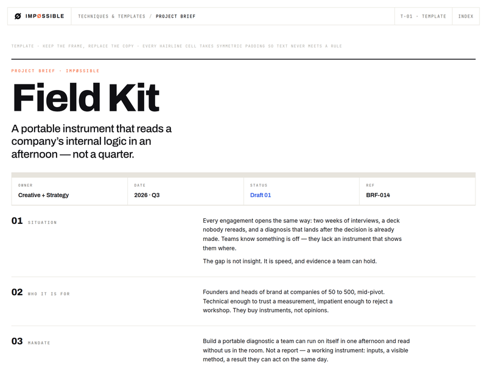
T-01
Project briefA one-page project brief on the shell — premise, mandate, territories, deliverables, measures.
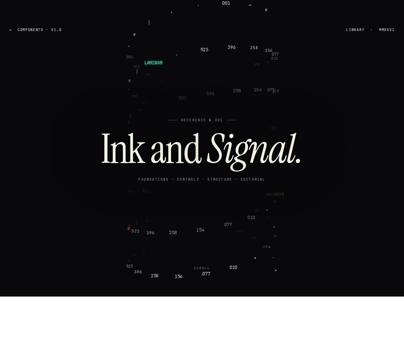
T-02
Editorial spec w/ ASCII animationsA component library set as an editorial specimen — serif display, mono chrome, hairline plates on white, ink as punctuation, and four glyph-field canvas animations (TS-13).
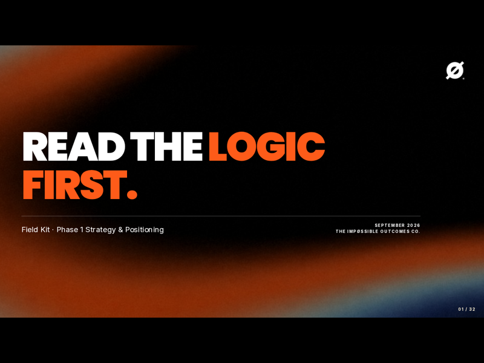
T-03
Strategy deckA strategy-deck template — 29 layouts on a fixed 1600 × 900 stage, one per slide with a usage note (N), generated image slots, and a machine-readable template.json. Worked example: Field Kit.